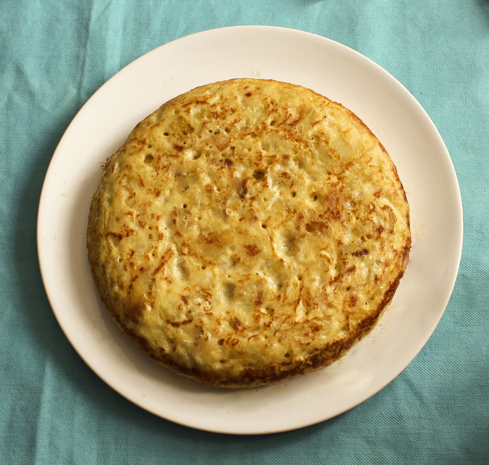

Tortilla de patata

Tortilla española, plato típico de la gastronomía española
Si hay un plato que pone a todo el mundo de acuerdo al elegirlo como el más representativo de la gastronomía de nuestro país, pero a la vez genera más discordia sobre los ingredientes o el punto que se le debe dar, ese es sin duda la tortilla de patatas o tortilla española.
Ingredientes
- 700 g de patatas para freír
- 1 cebolla grande (opcional)
- 500 ml de aceite de oliva suave para freír
- 6 huevos camperos grandes (8 si son medianos)
- 1 cucharadita de sal
Elaboración
- Pelar y cortar las patatas en rodajas o cuadraditos
- Pelar y cortar la cebolla en juliana
- Calentar el aceite y añadir las patatas con la cebolla
- Freír las patatas a fuego medio-bajo hasta que empiecen a dorarse
- Escurrir las patatas en un colador
- Batir los huevos y sazonar con sal
- Mezclar las patatas con los huevos y dejar reposar 10 minutos
- Cuajar la tortilla en una sartén engrasada con aceite
- Dar la vuelta a la tortilla y terminar de cuajar al gusto
- Dejar que repose unos minutos
Volver a página principal